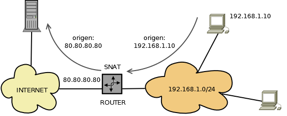
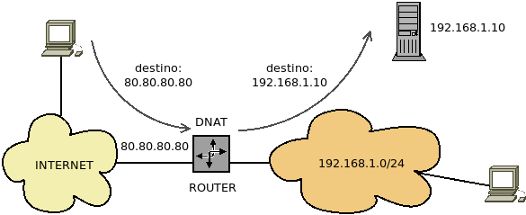

5. Conexión con redes públicas¶
La unidad reune aspectos relacionados con la interconexión de redes privadas con el exterior (esto es, internet). Revisa, pues, la parte de cliente en las relaciones cliente-servidor, a diferencia del resto de unidades (excepto la dedicada a redes inalámbricas) en que se analiza tales relaciones desde el punto del vista del servidor.
5.1. Acceso a internet¶
Las conexiones de acceso a internet podemos clasificarlas en dos grandes grupos:
- Líneas de acceso conmutado (LAC)
ya en desuso, necesitaban establecer una llamada entre los dos extremos para llevar a cabo la conexión. Dentro de esta categoría se encuentran las conexiones:
En telefonía de cable, RTB y RDSI.
En telefonía móvil, los sistemas de telefonía móvil analógica de 1G, y GSM (sistema global de comunicaciones móviles) y su mejora GPRS (servicio general de paquetes de radio), que se consideran telefonía móvil 2G. La TRAC, usada en España para proveer de línea telefónica a las zonas rurales, es un servicio de este tipo.
- Líneas de acceso dedicado (LAD)
caracterizadas porque siempre se encuentran activas y el cliente puede utilizarlas a tiempo completo.
xDSL
BPL, esto, es banda ancha sobre cable eléctrico que utiliza la tecnología PLC.
CATV, esto es, televisión por cable cuya tecnología ofrece también telefonía y acceso a internet.
Fibra.
VSAT, en que el acceso a internet es vía satélite.
WMAN, esto es, redes metropolitanas inalámbricas. La tecnología más común para redes de este tipo es WiMAX, que citamos al tratar las redes inalámbricas.
Servicios de telefonía a partir de 3G.
5.1.1. RTB¶
El acceso RTB (o RTC) usa exactamente la misma tecnología que la telefonía tradicional de voz, esto es, un par trenzado de cobre de 4 hilos y clavijas RJ11. Utiliza dos de los cuatro hilos y requiere un módem para transformar la señal analógica transmitida a través del cable en señal digital. Alcanzó velocidades de hasta 56 kpbs en bajada (y 33,6 kpbs en subida).
5.1.2. RDSI¶
Usa la misma infraestructura que la RTC aunque la comunicación es digital, no analógica. Utiliza par trenzado de cobre de 8 hilos y clavijas RJ45. El abonado podía contratar:
Acceso básico que se componía de un canal de control de 16 Kpbs para señalización y dos canales de 64 Kpbs con lo que la velocidad máxima de acceso podía ser de 128 Kbps. Lo habitual, sin embargo, era que se reservara un canal de 64 Kbps para voz y otro de 64 Kbps para datos, a fin de que se pudieran recibir llamadas de voz, mientras había establecida una comunicación de datos.
Acceso primario que se componía de un canal de control de 64 Kpbs y 30 canales de 64 Kpbs, con lo que aproximadamente se podían obtener velocidades de hasta 2 Mbps. Este acceso se reservaba para aquellos que requerían servicios de videoconferencia o televisión.
5.1.3. xDSL¶
Las líneas de abonado digital son tecnologías que usan la infraestructura tradicional de par trenzado de cobre, pero estableciendo una comunicación permanente y logrando convertila en líneas de banda ancha. Existen distintas tecnología de este tipo que pueden englobarse en dos categorías:
Las simétricas, en que los anchos de subida y bajada son las mismas.
Las asimétricas, en que el ancho de bajada es sensiblemente mayor al de bajada, y que, por tanto, son apropiadas para usuarios que domésticos que se caracterizan más por consumir información de internet (ser clientes) que por proporcionarla (ser servidores).
De todas estas tecnologías, la más habitual fue ADSL que disponía de tres canales de comunicación:
Un canal para servicio normal de telefonía (voz).
Un canal para recepción de datos.
Un canal para envío de datos, que tenía del orden de 8 veces menos velocidad.
Aunque la primera versión de ADSL podía alcanzar velocidades de hasta 8 Mbps, se empezó a comercializar en España con velocidades de 256 Kpbs; y se acabó comercializando (el ADSL2+) con velocidades de 20 Mbps (cerca de la máxima de 24 Mbps).
5.1.4. Fibra¶
Las comunicaciones con fibra tienen la ventaja de proporcionar grandes anchos de banda (mayores que las basadas en pares trenzados de cobre) y, además. permite cubrir largas distancias sin apenas necesidad de regenerar la señal al ser menos propensa a interferencias.
Hay fundamentalmente dos variantes:
HFC, que es una red híbrida de fibra y cable coaxial, en que la fibra se despliega hasta los nodos zonales y el cable coaxial interconecta dichos nodos con el nodo doméstico del usuario final. La tecnología empezaron a implementarla los operados de CATV para aprovechar la infraestructura final de cable coaxial que ya existía. En España, la red de fibra que desplegó la extinta ONO (en la actualidad operada por Vodafone) es de este tipo.
FTTH, en que la conexión de fibra llega hasta el propio hogar.
5.2. VPN¶
Para el desarrollo de este apartado siga las indicaciones del apartado homónimo incluido en una de las unidades del módulo de Seguridad Informática.
5.3. Proxies¶
Uno de los servicios más recurrentes en las redes locales con acceso a Internet son los servidores proxy, para cuyo conocimiento inicial es necesario leer el epígrafe del manual dedicado a su introducción. Para el desarrollo de este tema, sin embargo, sólo tienen interés los proxies directos, puesto que son los que intermedian entre la red local e internet. En especial es necesario tener presente lo siguiente:
Inicialmente era muy habitual que en la red local se dispusieran:
Proxies caché que, en función de la información sobre la caducidad del recurso web almacenaban una copia de esta, a fin de que la misma petición de un cliente posterior no exigiera volver a hacer la consulta remota al exterior. Esto suponía un ahorro de ancho de banda y una mejora en el tiempo de respuesta.
Proxies de filtrado que analizaban las cabeceras HTTP (en especial, el campo Host) o la ruta incluida en la petición o el propio contenido del recurso para decidir si la respuesta debía entregarse.
Sin embargo, al generalizarse el cifrado entre el cliente (el navegador) y el servidor web (o sea, HTTPs) estas técnicas se han vuelto inservibles.
Posteriormente, el filtrado se ha centrado en:
La resolución de nombres mediante sumideros DNS, ya que ésta seguía siendo tráfico inseguro. Sin embargo, surgieron DoT y DoH (véase esta referencia al asunto en el manual) que cifran la comunicación con el servidor DNS y, por tanto, vuelven inútil esta estrategia, sobre todo a raíz de que los principales navegadores (Chromium, Firefox) implementaron de serie esta posibilidad.
Nota
DoT es relativamente fácil prohibirlo, ya que usa un puerto propio (853/TCP), pero no así DoH que usa el puerto 443/TCP. En el segundo caso, eso sí, podrían prohibirse selectivamente las conexiones en el puerto 443/TCP a los servidores DNS que ofrecen DoH (p.e. 1.1.1.1).
El análisis mediante una herramienta DPI:
Del establecimiento de la conexión:
Comprobar que realmente es una conexión SSL y, si no es así, rechazarla.
Comprobar la validez del certificado de servidor.
Mirar el nombre del servidor en la la extensión SNI para determinar si se permite o no la comunicación[1].
Adivinar cuál es el protocolo cifrado mediante técnicas estadísticas que analicen el tamaño de los paquetes, la frecuencia con que se abren nuevas conexiones, etc.
En algunas redes en las que se quiere controlar el acceso de los clientes, se implementan los llamados portales cautivos. Un portal cautivo es un software que impide que los usuarios que acceden a la red, puedan usarla hasta que no verifiquen su identidad. Por lo general, consisten en un portal web que captura la petición del usuario y que impide el acceso a cualquier sitio de internet hasta que éste no se identifique.
5.4. Cortafuegos¶
Los cortafuegos se encargan fundamentalmente de dos tareas que requiere estudiar la unidad:
Desechar tráfico por indeseado o por excesivo.
La traducción de direcciones de red, esto es, NAT.
Para su estudio es necesario:
Conocer cómo se disponen en la red, esto es, estudiar Seguridad perimetral.
Profundizar en su concepto mediante la lectura del apartado Cortafuegos.
Hecho esto, podemos afinar algunas ideas, para completar los contenidos que requiere este módulo:
- Filtrado
El filtrado de tráfico consiste en permitir o denegar la entrada, salida o tránsito de paquetes atendiendo fundamentalmente a:
los datos provistos por las propias cabeceras de los paquetes (fundamentalmente de capa 3 ó 4, como direcciones IP de origen o destino, puertos de origen o destino, etc).
la caracterización del paquete como parte de un flujo de datos. Así podremos aceptar paquetes que formen parte de una conexión relacionada con otra (por ejemplo, en el protocolo FTP una conexión de datos relacionada con una conexión de control ya permitida) o aceptar paquetes que forman parte de una conexión de la que se aceptó el primer paquete.
Existen otros muchos criterios de filtrado más especializados:
Limitar el caudal de paquetes.
Analizar la información de capa de aplicación para determinar el tipo de tráfico y aceptarlo en función de cuál sea.
Implementar un análisis estadístico para adivinar el tipo de tráfico (y aceptarlo o no),
etc.
- NAT
Consiste en la manipulación de los paquetes para modificar su información de origen o de destino (fundamentalmente las direcciones, pero también los puertos o ambos datos):
- SNAT
Consiste en que la máquina que lo realiza, cambia el origen de la conexión. Un caso muy típico es el de la puerta de enlace (p.e. el router de nuestra casa) que comunica una red interna (p.e. nuestra red doméstica) con el exterior (p.e. Internet) ocultando la red interna de modo que al exterior parezca que todas las comunicaciones las origina ella:
Así, cada vez que un cliente interno realiza una consulta a un servidor web, al pasar la comunicación por el router, éste sustituye la dirección original privada (192.168.1.10), inalcanzable para el servidor web, por su propia dirección externa (80.80.80.80), que sí lo es, puesto que es una IP pública[2]. Este tipo concreto de SNAT recibe el nombre de enmascaramiento.
- DNAT
Consiste en que la máquina que lo realiza, cambia el destino de la conexión. Un cas tipo es aquel en que un servidor no se encuentra directamente expuesto a internet, sino dentro de una red interna. Cuando un cliente de internet quiera conectar con él utilizará como dirección del servidor la IP pública de la puerta de enlace del servidor y será esta la que redirija la petición hacia el servidor modificando la dirección de destino:

Notas al pie